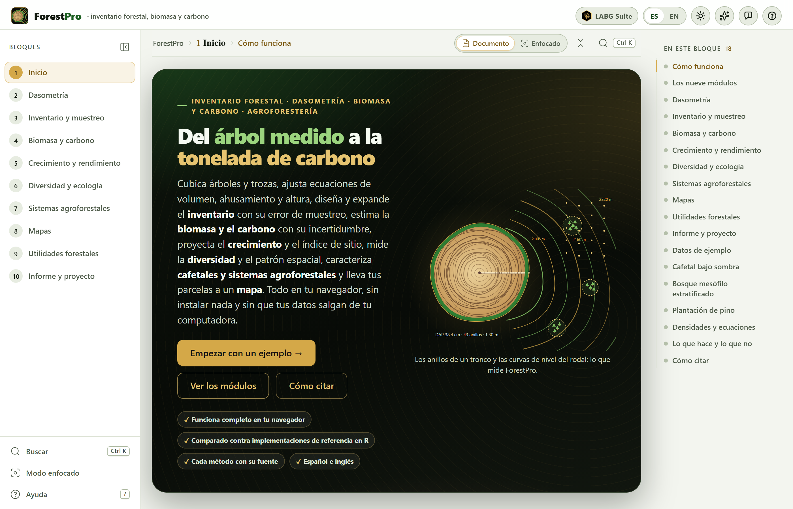
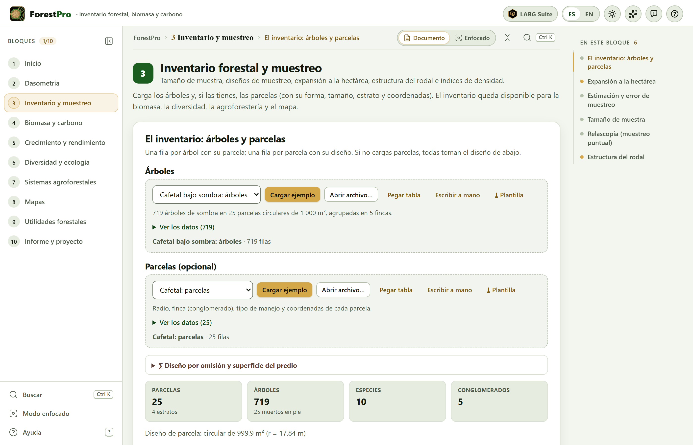
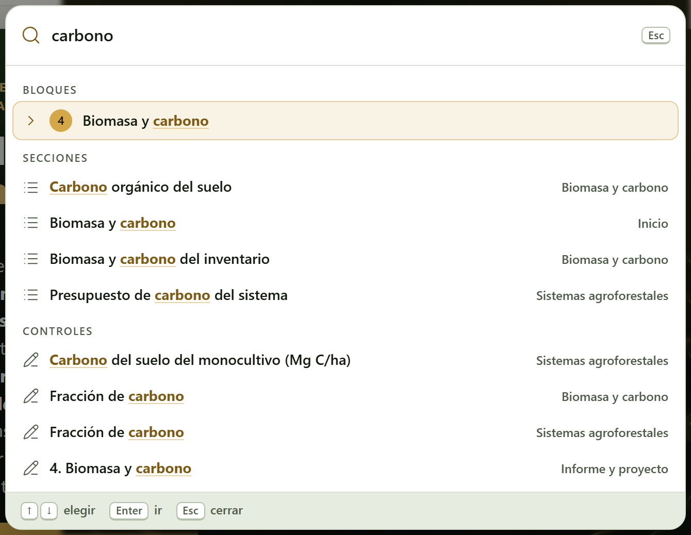
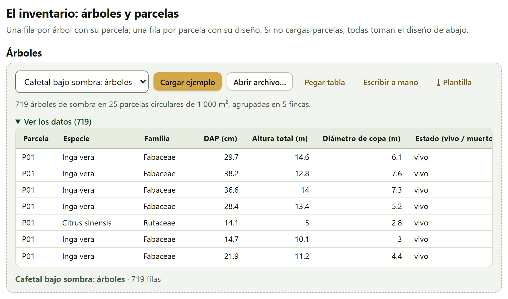
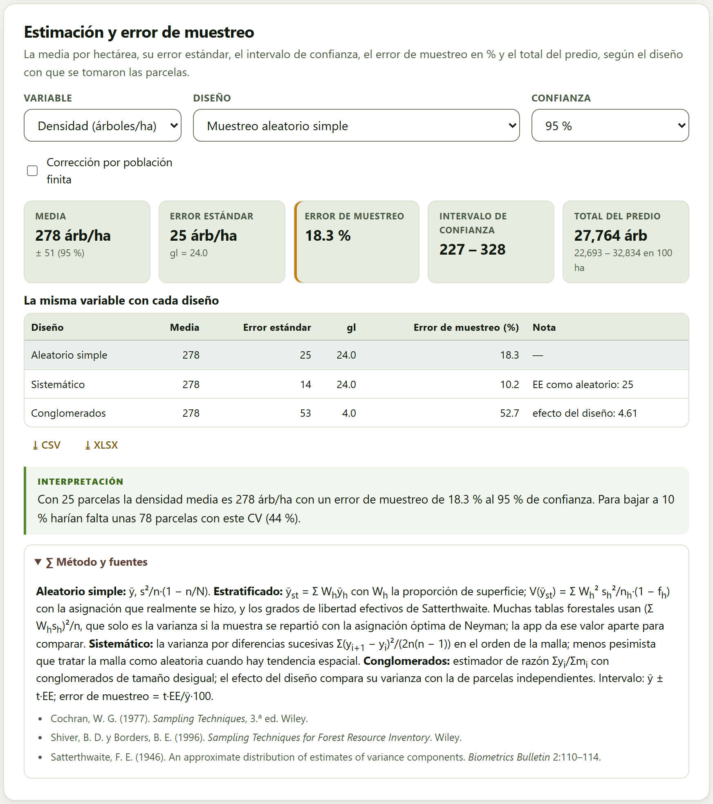
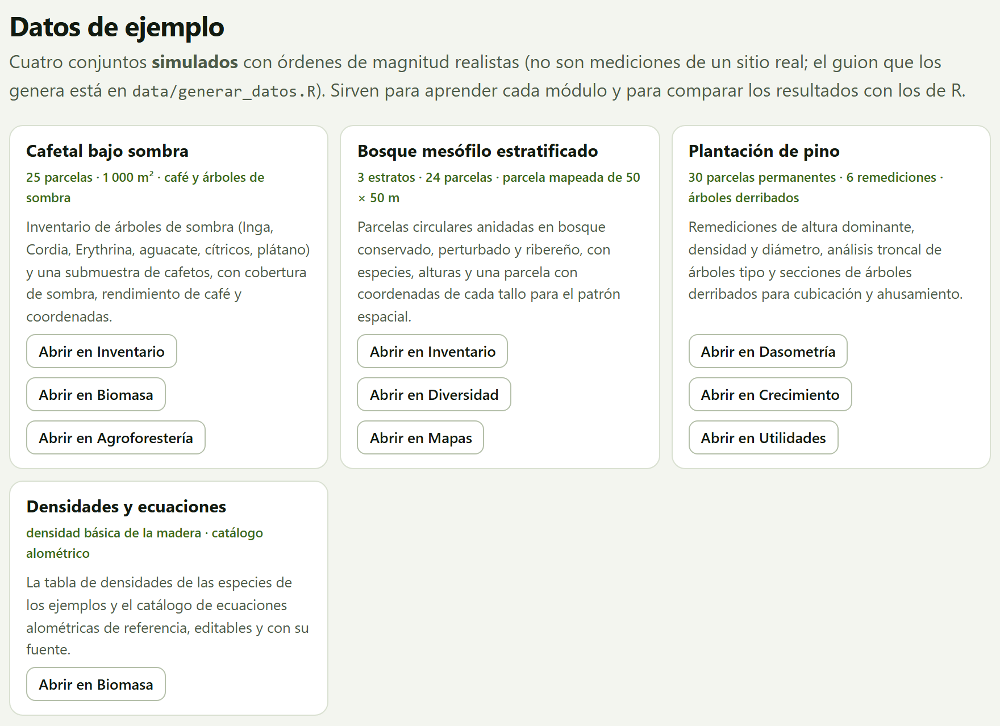
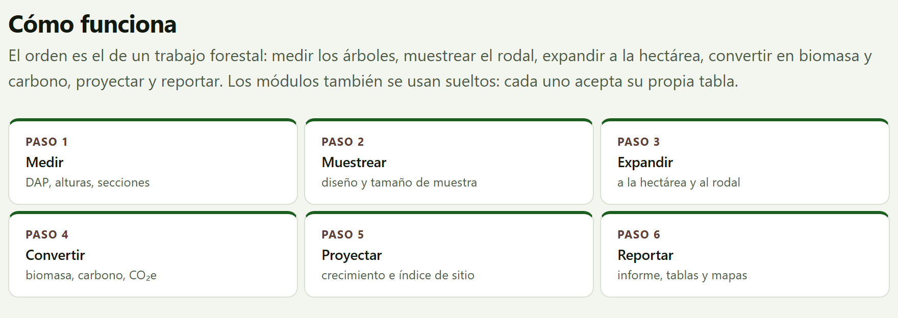

La cita del programa es la que da la propia app, lista para copiarse en APA o en BibTeX, en la sección Cómo citar de la portada y del Bloque 10; todos los informes terminan con ella. Además de la app, cita las ecuaciones y los métodos que usaste: cada resultado dice cuáles son en su recuadro Método y fuentes.
ForestPro funciona por completo dentro de tu navegador. Los inventarios, las parcelas, las fotografías del dosel y los proyectos que abres se leen en tu computadora y nunca se envían a ningún servidor: puedes trabajar con el inventario de un predio, de un proyecto de carbono o de una tesis en curso sin que nada salga de tu equipo. El programa no usa cuentas y no necesita conexión para calcular. La única petición a internet es voluntaria: el fondo de mapa en línea del Bloque 8, que viene apagado; si lo enciendes, el navegador pide sólo las imágenes del mapa del área visible, nunca tus datos.
Las ilustraciones, los diagramas y las capturas de pantalla de este manual son originales: se generaron con el propio programa o con código escrito para el manual. Los conjuntos de ejemplo que se usan en las capturas son simulados, salvo la tabla de densidades de la madera: los nombres de las especies son reales, pero los árboles, las parcelas y los predios no existen ni son mediciones de ningún sitio ni de ninguna publicación.
El manual sigue el mismo orden que la app: diez bloques numerados que se recorren de arriba abajo en la barra de la izquierda. Cada capítulo explica un bloque y lleva su mismo número —el capítulo 4 es el Bloque 4, y sus secciones y figuras se numeran 4.1, 4.2…—. La introducción no lleva número: sus secciones son I.1, I.2…
Cada capítulo empieza con lo que el bloque resuelve en un trabajo forestal, sigue con lo que hay en pantalla en el orden en que aparece y cierra con las reglas para leer el resultado y los errores más comunes. No hace falta leerlo de corrido: si sólo necesitas las existencias de un predio con su error de muestreo, basta el capítulo 3; si además quieres el carbono, el 4. El apéndice B reúne las reglas de todos los bloques.
El color del bloque aparece en la apertura de su capítulo, en el número de cada sección, en la pestaña del borde de la hoja y en el índice, y es el mismo de la franja de la portada.
| Bloque | Nombre en la app | Qué hace |
|---|---|---|
| 1 | Inicio | Qué hace la app y qué no, el flujo de un trabajo forestal, los nueve módulos, los cuatro conjuntos de ejemplo y cómo citar |
| 2 | Dasometría | Diámetro, área basal, volumen por fórmulas y por ecuaciones ajustadas, ahusamiento y relación altura–diámetro |
| 3 | Inventario y muestreo | Tamaño de muestra, diseños de muestreo, expansión a la hectárea, estructura del rodal e índices de densidad |
| 4 | Biomasa y carbono | Ecuaciones alométricas, densidad de la madera, biomasa aérea y de raíces, necromasa, carbono y CO₂e con su incertidumbre |
| 5 | Crecimiento y rendimiento | Incrementos corriente y medio, modelos de crecimiento, índice de sitio y proyección del rodal |
| 6 | Diversidad y ecología | Riqueza, índices y números de Hill, rarefacción, similitud entre sitios, estructura vertical y patrón espacial |
| 7 | Sistemas agroforestales | Sombra de cafetales (por inventario o por fotografía hemisférica), sombra y rendimiento, arreglos de plantación y presupuesto de carbono |
| 8 | Mapas | Parcelas y árboles en el mapa, áreas de polígonos, cuadrícula de muestreo, exportación GPX/KML/GeoJSON e interpolación |
| 9 | Utilidades forestales | Cubicación de trozas y madera aserrada, pies tabla, factores de forma, conversiones, rendimiento de aserrío y costo de plantación |
| 10 | Informe y proyecto | El informe HTML autocontenido, las tablas, el proyecto reimportable y la cita |
Aclaraciones y consejos prácticos que ahorran tiempo.
Lo que puede cambiar tus conclusiones si se pasa por alto.
La idea detrás de un cálculo, sin fórmulas innecesarias.
Un caso con los conjuntos de ejemplo del programa, con los números que da la app.
| Si el resultado cae en este caso… | entonces esta es la lectura recomendada. |
Son guías para interpretar, no leyes: lo que sabes del rodal, de cómo se midió y de lo que pide tu plan de manejo o tu estándar de carbono siempre manda.
Lo que suele fallar al usar el bloque —una columna emparejada con la que no era, una parcela con la superficie equivocada, una ecuación usada fuera de su intervalo de diámetros— y cómo se arregla.
| Así se escribe | Significa |
|---|---|
| Cargar ejemplo | Un botón, campo o menú de la app, con su texto tal como aparece en pantalla en español. |
| Bloque 3›Tamaño de muestra | Una ruta: abre lo primero y dentro busca lo segundo. |
Ctrl + K, .csv | Una tecla, un nombre de archivo o un valor que se escribe tal cual. |
| DAP, H, g, G | El diámetro normal a 1.30 m (cm), la altura total (m), el área basal de un árbol (m²) y la del rodal (m²/ha). |
| AGB, BGB, C, CO₂e | La biomasa aérea y la de raíces (en kg por árbol o en Mg/ha), el carbono y el dióxido de carbono equivalente (C × 44/12). |
| Mg/ha · 18.3 % | Los números se escriben con punto decimal y coma de miles, como los escribe la app, y con la unidad separada por un espacio; 1 Mg es una tonelada. |
Un inventario forestal empieza con la cinta diamétrica y el hipsómetro y termina en unas cifras que alguien más tiene que poder revisar: cuánta madera hay y con qué precisión, cuánta biomasa y cuánto carbono guarda el rodal, qué tan rápido crece, qué tan diverso es, dónde está cada parcela. ForestPro reúne ese trabajo en una sola página, en el orden en que se hace, y dice en cada paso de dónde sale cada número.
Es un programa de inventario forestal, dasometría, biomasa, carbono y agroforestería que corre en el navegador, sin instalar nada. Lleva un trabajo forestal de la hoja de campo al informe: medir los árboles, muestrear el rodal, expandir a la hectárea, convertir en biomasa y carbono, proyectar el crecimiento y reportar.
Está pensado para quien levanta y analiza inventarios —técnicos forestales, estudiantes de tesis, responsables de planes de manejo o de proyectos de carbono— y para los cafetales y otros sistemas agroforestales, que rara vez caben en las herramientas hechas para el bosque. Cubica árboles y trozas y ajusta ecuaciones de volumen, de ahusamiento y de altura; expande el inventario con su error de muestreo en cuatro diseños; estima la biomasa y el carbono con un catálogo de 31 ecuaciones alométricas, la densidad de la madera y su incertidumbre por Monte Carlo; ajusta curvas de crecimiento y de índice de sitio y proyecta el rodal; mide la diversidad, la similitud entre sitios y el patrón espacial de los árboles; caracteriza la sombra de un cafetal contando árboles o con una fotografía del dosel; lleva las parcelas a un mapa, con cuadrículas de muestreo e interpolación; y resuelve las cuentas del aserradero y de la plantación.
Todo se calcula con un motor escrito desde cero para este programa, sin bibliotecas de otros, y cada resultado trae su método, sus fuentes y una interpretación en palabras.

Una buena manera de saber si el programa te sirve es ver qué preguntas contesta, y en qué bloque.
| Pregunta | Bloque |
|---|---|
| ¿Qué volumen tiene este árbol, o esta troza? ¿Qué ecuación de volumen describe mejor a mis árboles? | 2 9 |
| ¿Qué diámetro tiene el fuste a cualquier altura, y cuántas trozas comerciales salen de él? | 2 |
| ¿Cuánto mide de alto un árbol al que no se le midió la altura? | 2 |
| ¿Cuántos árboles, cuánta área basal y cuánto volumen hay por hectárea, y con qué error de muestreo? | 3 |
| ¿Cuántas parcelas hacen falta para un error de muestreo dado? | 3 |
| ¿Cómo se reparten los diámetros, qué especies dominan, qué tan denso está el rodal? | 3 |
| ¿Cuánta biomasa y cuánto carbono guarda el predio, en cada reservorio, y con qué incertidumbre? ¿Cuánto cambió entre dos inventarios? | 4 |
| ¿A qué edad conviene cortar? ¿Qué calidad de sitio tiene cada parcela? ¿Cuánto volumen habrá dentro de diez años? | 5 |
| ¿Cuántas especies hay y cuántas faltan por registrar? ¿Qué tan parecidos son los sitios? ¿Los árboles están agregados, al azar o regulares? | 6 |
| ¿Cuánta sombra tiene el cafetal, y con cuánta sombra rinde más? ¿Cuánto carbono guarda frente a un monocultivo? | 7 |
| ¿Dónde están las parcelas, cuánto mide el predio, dónde pongo las parcelas de un inventario nuevo? | 8 |
| ¿Cuántos pies tabla salen de una troza? ¿Cuánto rinde el aserradero? ¿Es rentable la plantación? | 9 |
| ¿Cómo entrego todo en un informe, con sus tablas y sus métodos, y cómo retomo el trabajo después? | 10 |
Todo lo que sigue descansa en seis ideas. Si te quedas con ellas, buena parte de los errores que se cometen al procesar un inventario ya no son posibles.
El punto de partida es casi siempre una tabla: una fila por árbol, por parcela, por sección, por punto o por troza. Cada sección que necesita datos tiene una tarjeta de datos que la lee de un ejemplo, de un archivo, de una tabla pegada o escrita a mano, o del inventario ya cargado en el Bloque 3, y después empareja sus columnas con los campos que pide el método (sección I.6).
| Entra | Formato y dónde |
|---|---|
| Tablas | Archivos .csv, .txt o .tsv separados por comas, punto y coma o tabuladores, con punto o coma decimal; libros .xlsx, .xlsm y .ods, eligiendo la hoja; o una tabla pegada desde una hoja de cálculo, con su fila de nombres. En todos los bloques |
| El inventario | Árboles y, si las hay, parcelas con su forma, tamaño, estrato y coordenadas (Bloque 3); lo usan después los bloques 2, 4, 6, 7 y 8 |
| Densidad de la madera | La tabla de la app, editable, o el archivo completo de la base mundial de densidad de la madera (Bloque 4) |
| Fotografía del dosel | Una foto hemisférica o una foto normal hacia arriba (Bloque 7) |
| Geometrías | Archivos GPX, KML o GeoJSON, y tablas de vértices con su latitud y longitud (Bloque 8) |
| Proyectos | Un .json guardado antes por la propia app, que repite los pasos dados (Bloque 10) |
| Sale | Formato |
|---|---|
| Figuras | Curvas, distribuciones, mapas, dendrogramas, ordenaciones y planos, en SVG, PNG a 300 ppp o más, JPG o PDF vectorial, desde el estudio de figuras de la suite |
| Tablas | Cada tabla de resultados en CSV o XLSX, junto a ella; todas juntas en un libro XLSX, una hoja por tabla, o en un ZIP de CSV (Bloque 10) |
| Geometrías | Las parcelas, la cuadrícula de muestreo y los polígonos en GPX, KML, GeoJSON o CSV, para el GPS o para un programa de mapas (Bloque 8) |
| Informe | Un HTML autocontenido —portada, resumen, figuras, tablas, interpretaciones y, si se pide, métodos con sus fuentes— que se imprime a PDF (Bloque 10) |
| Proyecto y cita | El proyecto en .json, para retomar el trabajo, y la cita en APA o en un archivo forestpro.bib (Bloque 10) |
Los bloques también se pasan datos a otras apps de la suite: la matriz de similitud del Bloque 6 se envía a ClusteringPro y a PCAPro, y el carbono del suelo del Bloque 4 lee las tablas por capas de SoilPro.
Sólo un navegador moderno, en una versión de los últimos años, en computadora, tableta o teléfono. No hace falta instalar nada ni tener internet; el programa entero cabe en una carpeta.
index.html. Abre en el navegador predeterminado, en la portada. Es lo más sencillo y funciona igual que todo lo demás: los cálculos y los conjuntos de ejemplo están dentro del programa.Open ForestPro.bat. Si tu equipo no deja abrir páginas como archivos locales, arranca un servidor mínimo en tu propia computadora (también se puede correr server.ps1 con PowerShell) y abre la app en http://localhost:9480.Las preferencias —el idioma, el tema claro u oscuro, las animaciones— se guardan en el propio navegador y se recuerdan la siguiente vez. Los datos no: cada vez que abres la app empieza vacía, y para retomar un trabajo está el proyecto .json del Bloque 10. Si intentas cerrar la pestaña con datos cargados o resultados sin guardar, la app te lo advierte.
El archivo tests/run.html corre las 72 pruebas automáticas de la app en el navegador; todas deben salir en verde. La portada las enlaza al pie, junto con este manual y la validación (sección I.9).
Todas las aplicaciones de la suite comparten la misma barra, la misma navegación y las mismas herramientas de figuras, así que lo que aprendas aquí te sirve en las demás.
A la izquierda está la barra de los diez bloques; a la derecha, la lista En este bloque, con las secciones del bloque abierto. Todos los bloques están abiertos desde el principio y cada uno se puede usar suelto. Al pie de cada bloque dos botones llevan al anterior y al siguiente. Cuando cambias un control y los resultados se recalculan más abajo, aparece un botón flotante que te regresa al control que tocaste, y otro para volver arriba. Casi todo se puede hacer también desde el teclado:
| Tecla | Qué hace |
|---|---|
Alt + ← · Alt + → | El bloque anterior o el siguiente; en el modo enfocado, la sección anterior o la siguiente (en los extremos, el bloque) |
Ctrl + K | Buscar bloques, secciones, controles y acciones |
[ · ? · Esc | Contraer o mostrar la barra de bloques · ver la lista de atajos · cerrar ventanas y paneles |
← · → | Recorrer la barra de bloques, con el foco en ella |
+ · − | En el mapa del Bloque 8: acercar y alejar |

1 2 3 4 5 6 7 8 9 10 11 12?).[ la contrae.Ctrl + K). Un bloque, una sección, un control o una acción, por su nombre.
Ctrl + K) con «carbono» escrito: encuentra el Bloque 4, las secciones que lo nombran en los bloques 1, 4 y 7 y los controles que lo llevan en su rótulo, cada uno con el bloque donde está. Enter lleva al resultado elegido.Casi todas las secciones que necesitan datos los reciben por la misma pieza, la tarjeta de datos, así que se aprende una vez. De izquierda a derecha: la lista de ejemplos de esa sección con Cargar ejemplo (una nota debajo dice qué trae el ejemplo elegido); Abrir archivo…; Pegar tabla; Escribir a mano, que abre una tabla vacía con las columnas que pide la sección; Usar el inventario cargado, en las secciones que pueden trabajar con el del Bloque 3; y ⤓ Plantilla, un CSV con los nombres de las columnas y tres filas de ejemplo.
Después de leer un archivo o una tabla pegada, la app empareja las columnas: las que reconoce por su nombre, en español o en inglés y con varios sinónimos, ya vienen elegidas; las demás se eligen en una lista, y las obligatorias llevan un asterisco. Usar estos datos las carga. Las filas a las que les falta un dato obligatorio se dejan fuera con un aviso, y Ver los datos muestra lo que se cargó.

Los resultados de todas las secciones tienen la misma forma: unos mosaicos con los pocos números que importan; las figuras y las tablas, con sus botones ⤓ CSV y ⤓ XLSX; una interpretación en palabras, escrita con los números de tus datos; los avisos, cuando algo merece atención; y, al final, el recuadro desplegable Método y fuentes, con las fórmulas y las publicaciones de donde salen.

Todas las figuras de la app se pueden abrir en el estudio de figuras, una ventana común a la suite donde se cambian los textos, el tamaño de la letra, la leyenda y los colores sin tocar los datos, y se exporta a los anchos y resoluciones de las revistas. Junto a cada figura, el botón ✎ abre el editor de esa figura, para cambiar sus títulos, sus ejes, sus series, su leyenda y sus anotaciones. Las figuras se exportan siempre con los colores del tema claro, aunque estés trabajando en el oscuro. El capítulo 10 lo explica a fondo.
Para aprender sin datos propios, la app trae cuatro conjuntos. Tres son simulados con una semilla fija y órdenes de magnitud realistas: las especies son reales, pero los árboles, las parcelas y los predios no existen, y sirven para recorrer la app y para las pruebas, no para describir ningún sitio. El cuarto reúne tablas de referencia. Se abren con los botones Abrir en … de Bloque 1›Datos de ejemplo, que abren el bloque y cargan el ejemplo, o desde la lista de ejemplos de cada tarjeta de datos.

| Ejemplo | Abre en | Qué tiene y para qué sirve |
|---|---|---|
| Cafetal bajo sombra | 3 4 7 | Veinticinco parcelas circulares de 1 000 m² en cinco fincas con cuatro manejos —rústico, policultivo tradicional, policultivo comercial y monocultivo bajo sombra—: 719 árboles de sombra con su DAP, su altura y su copa, 250 cafetos, el suelo por capas, la hojarasca, la sombra y el rendimiento de café, con coordenadas. Inventario, biomasa y carbono, sombra y rendimiento, mapas. |
| Bosque mesófilo estratificado | 3 6 8 | Veinticuatro parcelas circulares anidadas en tres estratos —conservado, perturbado y ribereño— con 1 830 árboles; una parcela de 50 × 50 m con las coordenadas de sus 196 tallos; 15 puntos de relascopía, transectos de madera caída y el polígono del predio. Inventario estratificado, relascopía, diversidad y patrón espacial, necromasa, mapas. |
| Plantación de pino | 2 5 9 | Treinta parcelas permanentes medidas seis veces, el análisis troncal de seis árboles, 40 árboles derribados y cubicados por secciones y una parcela con alturas faltantes. Cubicación, ecuaciones de volumen y de ahusamiento, curvas de altura, crecimiento, índice de sitio y cambio de carbono. |
| Densidades y ecuaciones | 4 | La densidad básica de la madera de 42 especies o géneros, tomada de la base mundial de densidad de la madera (de dominio público), y el catálogo de 31 ecuaciones alométricas de referencia, editables y con su fuente. |
Cómo se simuló cada conjunto —los modelos, los parámetros, la semilla— está escrito en data/LEEME.md, junto al guion que los genera; las tablas están también en data/ como CSV, con los nombres de columna que la app reconoce sin tener que emparejarlos. En el texto se dice «el cafetal de ejemplo», no «el cafetal».
Los bloques están en el orden de un trabajo forestal real. No hace falta pasar por todos: los que no apliquen se saltan, y cada módulo se usa también suelto, con su propia tabla. La sección Cómo funciona de la portada lo resume en seis pasos.

Lo que cargas en el Bloque 3 queda disponible para la biomasa, la diversidad, la agroforestería y el mapa, con los botones Usar el inventario del Bloque 3 o Usar el inventario cargado; el Bloque 4 usa además sus factores de expansión. Si cargas otro inventario, cada bloque recalcula lo suyo cuando vuelves a pedirlo, y la palomita de la barra marca los bloques que ya tienen un resultado.
Un programa de cálculo vale lo que valen sus números. Cada motor de cálculo de ForestPro corre igual en el navegador que fuera de él, así que cada bloque se comparó, con los conjuntos de ejemplo, contra implementaciones de referencia independientes, escritas por otros en un lenguaje de cálculo estadístico de código abierto, y contra fórmulas escritas aparte donde no existe una implementación. Cada comparación tiene su tolerancia.
| Bloque | Tema | Comparaciones | Desacuerdos |
|---|---|---|---|
| 2 | Dasometría individual | 287 | 0 |
| 3 | Inventario forestal y muestreo | 458 | 0 |
| 4 | Biomasa y carbono | 5 015 | 0 |
| 5 | Crecimiento y rendimiento | 613 | 0 |
| 6 | Diversidad y ecología del bosque | 1 222 | 0 |
| 7 | Sistemas agroforestales | 211 | 0 |
| 8 | Mapas y geoprocesamiento ligero | 269 | 0 |
| 9 | Utilidades forestales | 252 | 0 |
| Total | 8 327 | 0 |
Las comparaciones sirvieron también para encontrar errores y diferencias de convención, que quedaron documentados y, los errores, corregidos antes de publicar. Por ejemplo, la primera versión del Monte Carlo del Bloque 4 corregía dos veces el sesgo de la escala logarítmica y daba una biomasa media 6.6 % más alta que el cálculo directo: el coeficiente 0.0673 de Chave et al. (2014) ya incluye esa corrección. O que en el cuadro de raíz/tallo del IPCC (2006) la clase «50–150» incluye el 150. Los capítulos dicen, donde importa, qué convenio sigue la app y por qué. El detalle, bloque por bloque, está en la carpeta tests/ del programa.
Saber dónde termina una herramienta es tan útil como saber qué hace. La portada de la app lo dice en Lo que hace y lo que no:
| No hace | Por qué, y qué hacer |
|---|---|
| Sustituir la ecuación local | Las ecuaciones de biomasa del catálogo son de referencia. Si existe una ecuación para tu especie y tu región, agrégala al catálogo del Bloque 4 y asígnala a esa especie. |
| Ser un sistema de información geográfica | El mapa calcula áreas, cuadrículas e interpolaciones y exporta GPX, KML y GeoJSON; para un análisis espacial completo, lleva esos archivos a un programa de mapas. |
| Certificar carbono | Las cifras de carbono y su incertidumbre sirven para estudios y planes de manejo; un proyecto de mercado de carbono sigue además las reglas de su estándar. |
| Planear el muestreo por ti | Calcula el tamaño de muestra y dibuja la cuadrícula, pero el diseño, la forma y el tamaño de las parcelas, y el criterio para medir, son del técnico. |
| Modelos árbol por árbol ni teledetección | El crecimiento se proyecta a nivel de rodal; la app no trabaja con imágenes de satélite ni con nubes de puntos. |
| Guardar en un servidor | No se conecta a bases de datos ni guarda nada fuera de tu equipo: el trabajo se conserva en el proyecto .json. |